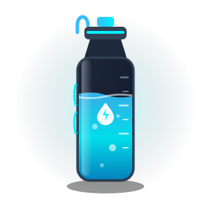

SPORTS PERFORMANCE TECH
HydroFit: Optimización de Hidratación Deportiva
Una correcta hidratación es el pilar biológico del rendimiento físico de élite. Durante el entrenamiento de fuerza y la actividad cardiovascular, una pérdida de apenas el 2% de peso corporal en agua reduce la potencia muscular hasta un 15%, ralentiza la síntesis de proteínas y prolonga la fatiga central. Mantener un balance hídrico óptimo acelera la recuperación muscular, lubrica las articulaciones y optimiza el transporte de nutrientes esenciales a los tejidos.

🎯 Meta Diaria Recomendada:
8 vasos (2,000 ml)
Registro Diario de Hidratación
En vivo
Consumo Actual
0
ml
Vasos Tomados
0
/ 8
Progreso
0
%
0 ml
0% completado
2000 ml
💡 Comienza tu día bebiendo tu primer vaso para activar tu metabolismo.